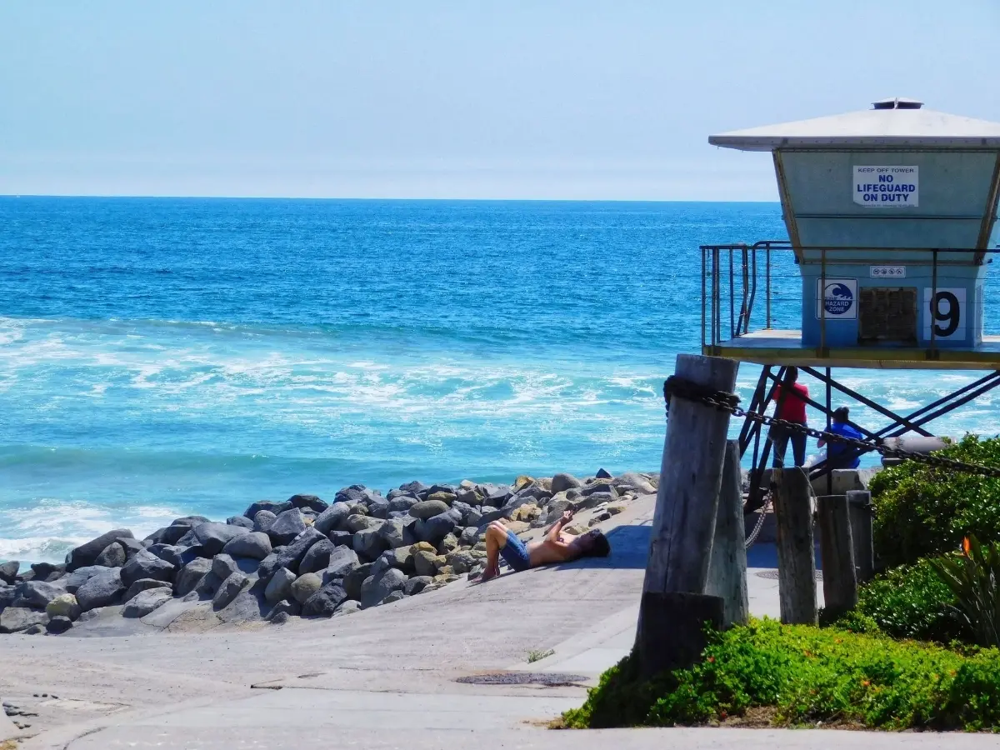

Hi, my name is Dillon Gulley, and I’m a junior at El Camino High School in Oceanside, California. Growing up by the beach has shaped a lot of who I am, since the ocean has always been a major part of my life. I work as an Oceanside lifeguard, a job that has taught me responsibility, leadership, and the importance of making smart decisions under pressure. Every shift challenges me to stay alert and confident while keeping others safe, which has helped me build maturity and discipline. Outside of work, I spend much of my free time in the water—swimming, surfing, and playing water polo. Each activity gives me a unique way to connect with the ocean, whether it’s the focus of competitive sports, the balance of riding waves, or the teamwork that comes with playing water polo. Being active in these ways inspires me to push myself, stay healthy, and appreciate the lifestyle that comes with living in a coastal community that has great food.
While the ocean is a huge part of my life, I’ve also developed a strong interest in technology and creativity. This year I joined a web design class, where I’ve been learning the foundations of coding with HTML and CSS, as well as exploring Adobe Dreamweaver to design layouts and bring ideas to life. Building websites has quickly become something I really enjoy because it combines problem-solving with creativity. I’ve found it exciting to take an idea and turn it into something people can actually see and use on a screen. The process has taught me patience, persistence, and attention to detail, since it takes time to troubleshoot problems and make everything work smoothly. As I continue learning, I hope to take on bigger projects that allow me to showcase both design and functionality while improving my skills as a student and creator.
Balancing lifeguarding, athletics, and school has been challenging, but it has also taught me valuable lessons about hard work, focus, and determination. Lifeguarding has built my confidence and leadership, sports have taught me discipline and teamwork, and web design has shown me how rewarding it is to create something from scratch. Each area of my life pushes me in different ways, and together they have helped me grow into a well-rounded person. Looking ahead, I want to keep improving in both athletics and technology while preparing for my future after high school. This website is a place for me to share that journey—highlighting my interests, the projects I’ve created, and the goals I’m working toward. Whether it’s my time in the ocean, my work as a lifeguard, or my passion for design, I hope this page gives you a clear picture of who I am and where I’m headed.
I want to go to lunch